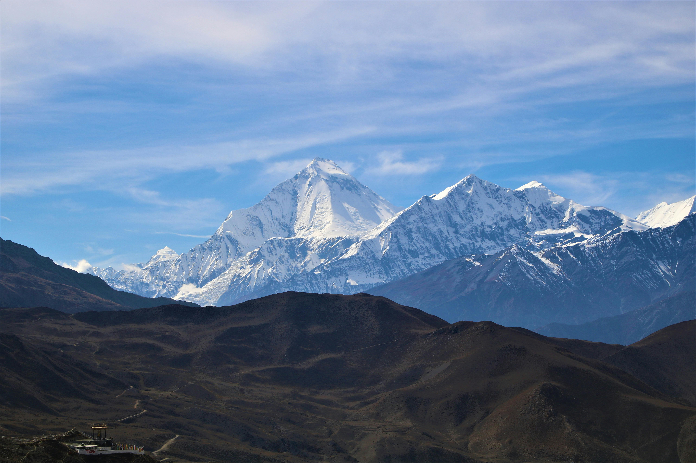

Introduction
Good morning/afternoon sir. We hope you are fine and we are fine as well. We students created this project/webpage on the project given by our beloved teacher Raju Gupta, i.e. you.
We are grateful to have such a wonderful teacher like you. Before starting the presentation/project, we would like to introduce you to our group and the members are:
1. Reyan
2. Kritika
3. Sujal
4. Ashim
5. Jasmine
6. Shubham
7. Bibek
8. Prashant
9. Saisha
So now, Without wasting any time, we would like to go through the project/presentation.
Introduction to mountains
What are mountains?
A mountain is a large natural elevation of the Earth’s surface that rises prominently above the surrounding land, usually with steep sides and a peak (summit) at the top.
There are 14 mountains with their height crossing 8,000 meter. Among them 8 mountains are said to be in our home land, Nepal. This is the reason nepal is said to be "Country of Mountains".
Mountains of Nepal
Mount Everest–8848 m
Kanchenjunga–8586 m
Lhotse–8516 m
Makalu–8485 m
Cho Oyu–8188 m
Dhaulagiri I–8167 m
Manaslu–8163 m
Annapurna I–8091 m

Mount Everest is the highest mountain in the world, standing at about 8,848 meters above sea level. Located in the Himalayas on the border between Nepal and China, it is a symbol of natural beauty and human endurance. Everest attracts climbers, scientists, and tourists from all over the world who are fascinated by its majestic snow-covered peak and challenging climbing routes. The mountain experiences extremely cold temperatures, strong winds, and low oxygen levels, making it one of the most dangerous yet most admired places on Earth. For Nepal, Mount Everest is a national pride and an important part of the country’s tourism and cultural identity.

Mount Kanchenjunga is the third highest mountain in the world and is located on the border between Nepal and India in the eastern Himalayas. It has a height of about 8,586 meters and is known for its stunning natural beauty and sacred significance to the local people living around the mountain. The name Kanchenjunga means “Five Treasures of Snow,” referring to its five main peaks which are believed to represent gold, silver, gems, grain, and holy scriptures. The mountain is less crowded than Mount Everest, making it a popular destination for climbers who seek a quieter and more challenging adventure. Its region is rich in biodiversity and offers breathtaking landscapes of snow, forests, and valleys.

Mount Lhotse is the fourth highest mountain in the world and is located near Mount Everest in the Himalayas on the border between Nepal and China. It has a height of about 8,516 meters and is famous for its steep and challenging south face, which is considered one of the most difficult climbing routes in the world. Lhotse is closely connected to Everest through the South Col pass, and many climbers attempt to summit it during Everest expeditions. The mountain is covered with snow and glaciers throughout the year and is an important part of Nepal’s natural landscape and mountaineering history.

Mount Makalu, which is the fifth highest mountain in the world and the fourth highest mountain located in Nepal. It is famous for its pyramid-like shape and is one of the most challenging mountains to climb due to its steep slopes and harsh weather conditions.

Cho Oyu, which is the sixth highest mountain in the world and is located in the Himalayas near the Nepal–China border. It has a height of about 8,188 meters and is considered one of the easier 8,000-meter peaks to climb compared to other Himalayan mountains, which makes it a popular choice for mountaineers preparing for higher challenges.

Dhaulagiri I, which is the seventh highest mountain in the world. It is located in the western part of Nepal and has a height of about 8,167 meters. The mountain is known for its extremely steep and rugged structure, making it one of the most difficult peaks to climb in the Himalayas. Its name means “White Mountain,” referring to its snow-covered appearance.

Mount Manaslu, which is the eighth highest mountain in the world and is located in the Gorkha region of Nepal. It has a height of about 8,163 meters and is known as the “Mountain of the Spirit.” Manaslu is popular among experienced climbers because of its challenging terrain, glaciers, and high-altitude weather conditions.

Annapurna I, which is the tenth highest mountain in the world and has a height of about 8,091 meters. It is located in the Annapurna region of Nepal and is known for being one of the most dangerous mountains to climb due to its high avalanche risk and unpredictable weather. Despite the difficulty, the mountain is famous for its breathtaking scenery and is an important destination for trekkers and mountaineers.